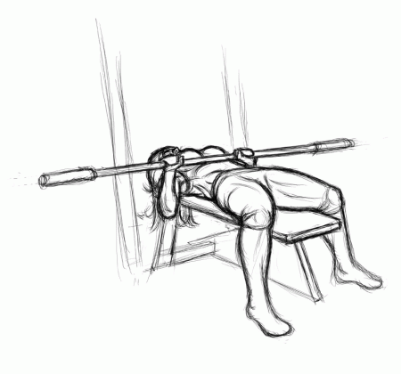

Cuidado, no te rompas la espalda loco.

Curvy Bench Press
Este ejercicio se hace asi y asado. Es un hecho establecido hace demasiado tiempo que un lector se distraera con el contenido del texto de un sitio mientras que mira su diseño.
leer todo
00:00